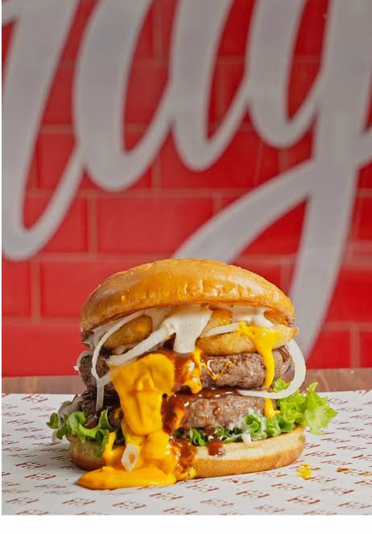

Burger Recipe

description
Juicy beef patty, melted cheese, fresh lettuce, and house sauce on a warm brioche bun.
Ingredients
main ingredients
- Ground Meat 80/20 ground beef (80% lean meat, 20% fat—ground chuck works best for juiciness).
- Salt: Coarse kosher salt (seasoned right before cooking, not mixed into the meat).
- Pepper: Freshly cracked black pepper.
- Seasonings: Garlic powder, onion powder, or a dash of Worcestershire sauce.
The Bun & Cheese
- Brioche, potato roll, or sesame seed bun (brushed with butter and toasted)
- Cheese: American cheese (for maximum meltiness), sharp Cheddar, or Swiss cheese.
Fresh Toppings
- Lettuce: Crisp iceberg or romaine leaves.
- Tomato: Sliced ripe tomatoes.
- Onions: Thinly sliced raw red onion, white onion, or caramelized onions.
- Pickles: Dill pickle chips or sweet relish.
Classic Sauces
- Mayonnaise
- Yellow mustard
- Ketchup
- Burger Sauce (Optional): Mayo + ketchup + relish + splash of pickle juice + garlic powder.
Steps
Prep
- Shape ground beef (80/20) into patties and season both sides with salt and pepper. Butter and toast your buns in a pan until golden.
Cook & Melt
- Sear patties in a hot skillet for 3–4 minutes, flip, add cheese, and cook for 1–2 more minutes until melted.
Assemble
- Spread sauce on the bottom bun, layer lettuce, tomato, and pickles, add the cheesy patty, and cap with the top bun.
home